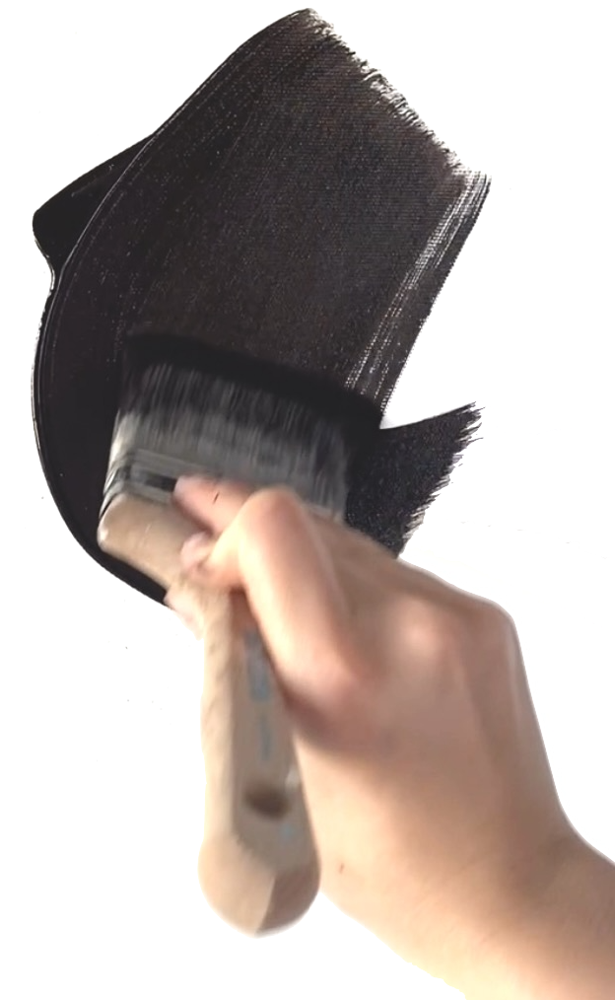

Sarah Baur is a painter based Zurich, Switzerland. She has been drawing for over 10 and painting over 4 years. Her work is known for its interesting textures and organic flow. She draws inspiration from the world around and inside her, including nature and emotions. She mainly works with acrylics and textured materials to create her pieces.
